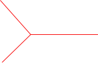
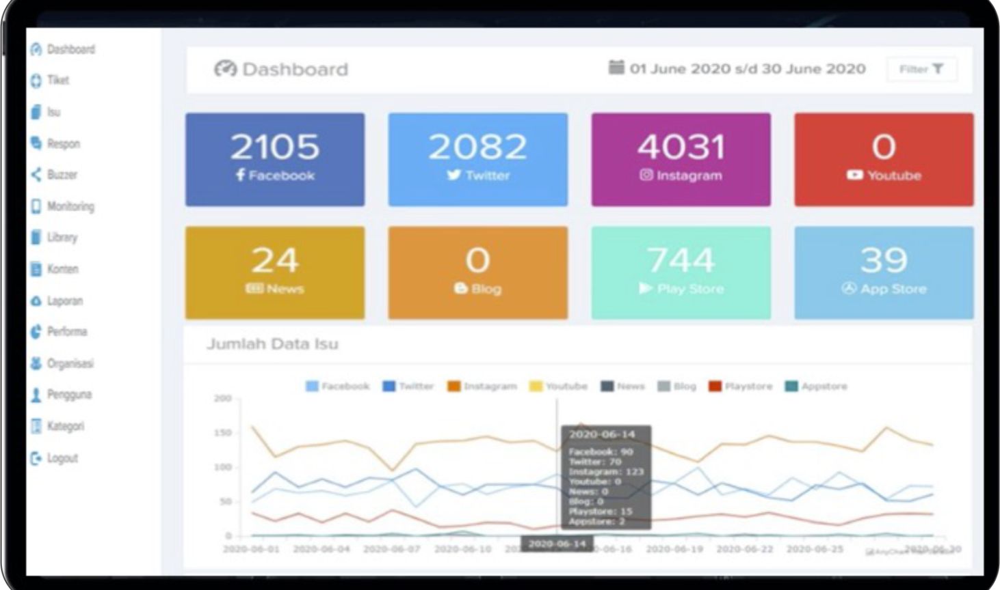
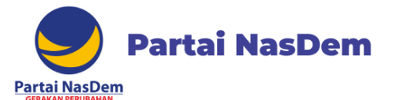
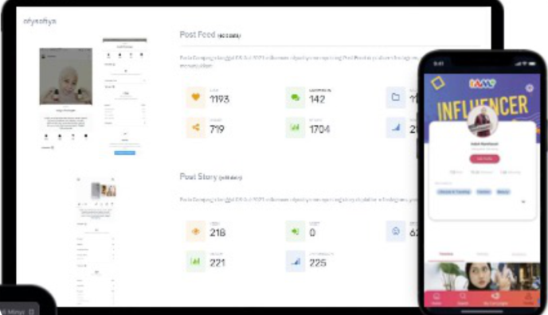
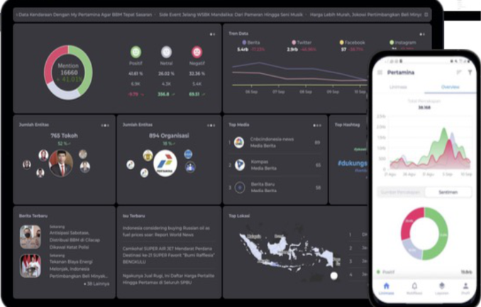
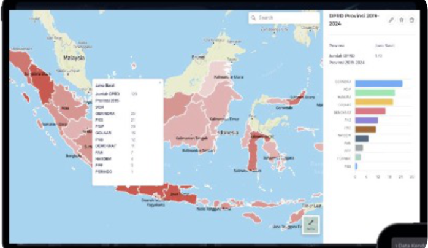

Arah Indonesia
Political Intelligent
Seni memenangkan Kompetisi di setiap Pemilihan Umum
dengan memanfaatkan Big Data dan Social Media Monitoring
Arah Indonesia
Political Intelligent
Seni memenangkan Kompetisi di setiap Pemilihan Umum
dengan memanfaatkan Big Data dan Social Media Monitoring
# ORM
# Influencer & Cyber Army


Solusi yang kami tawarkan menggunakan Big Data untuk
mengumpulkan data secara massif serta Artificial Intelligence
untuk analisis konten secara otomatis
News, Social Media (Fb, Twitter,
Youtube, Instagram, Tiktok),
Forum, Blog, TV, Radio
Data Profil Daerah, Pemilu 2019,
Pemilu 2024, Demografi Pemilih,
Data Partai & Caleg
Influencer Internal Partai, Influencer
Eksternal Partai (Artis, Konten
Kreator, Youtuber, Nano Influlencer)
Pemrosesan Data dan
Analisis Data dengan
Machine Learning (Al)
Identifikasi dan counter serangan di
media sosial
Membuat dan Mendistribusikan konten
di berbagai platform
Sistem Tiketing Isu untuk pemantauan
dan penyelesaian Isu
Penyediaan template dan standar konten
foto, video, dan artikel blog


Solusi Cerdas dan Transparansi Data reat time
memanfaatkan akses big data dan analytic engine
untuk memetakan kondisi factual sebagai dasar
menentukan kebijakan.

Pembuatan konten melalui
influencer di sosial media
Pelaporan kampanye influencer
Pemantauan Isu dan Sentimen
untuk strategi komunikasi
Analisis tren dan competitor untuk
strategi positioning partai
Memantau aktivitas DPD dan DPC Manajemen Krisis dan Isu
Pemetaan Sebaran Suara
Partai dan Caleg
Pemetaan Sebaran
Kekuatan Partai
Analisis Demografi dan
DPT Target Dapil
Alokasi Sumberdaya